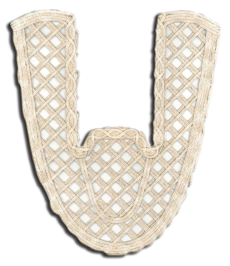

MANUFACTURAS GODELA
Somos una empresa con más de 20 años de experiencia en el diseño y fabricación de adornos, manufacturas para el calzado y la marroquinería. Gracias a una firme apuesta por la innovación constante, la calidad de las pieles utilizadas y un cuidadoso proceso artesanal, Manufacturas Godela ha conquistado tanto el mercado nacional como el internacional. Hoy, sus productos lucen con orgullo en algunas de las pasarelas de moda más prestigiosas del mundo, integrándose en colecciones de calzado y accesorios de marcas reconocidas a nivel global.
Innovación tecnológica y control de calidad
La combinación entre artesanía y tecnología es una de las claves del éxito de Manufacturas Godela. La empresa ha invertido en maquinaria de última generación para el corte, troquelado, estampación y ensamblado de piezas, lo que permite mantener altos volúmenes de producción sin renunciar a la precisión y al detalle.
Al mismo tiempo, se aplica un estricto control de calidad en cada fase del proceso, garantizando que todos los productos cumplan con las especificaciones técnicas y estéticas requeridas. Esto se traduce en menores tasas de devolución, mayor satisfacción del cliente final y una reputación impecable en el sector.

Moda y sostenibilidad: compromiso con el futuro
En un contexto donde la industria de la moda se enfrenta al reto de ser más sostenible y respetuosa con el medio ambiente, Manufacturas Godela no ha querido quedarse atrás. La empresa ha implementado políticas de sostenibilidad que abarcan desde la selección de materiales ecológicos hasta la optimización de procesos productivos que reducen el consumo de recursos y la generación de residuos.
Asimismo, se trabaja cada vez más con pieles de curtición vegetal, libres de metales pesados, y se fomenta la colaboración con proveedores que comparten esta filosofía de responsabilidad ambiental.
Además, la producción local y la durabilidad de los adornos y piezas diseñadas contribuyen a alargar el ciclo de vida útil del producto final, alineándose con los principios de la economía circular y el consumo responsable.
adornos y marroquinería
Fornituras, cadenas, hebillas, broches, adornos para marroquinería, tiradores, mosquetones, botones y adornos para calzado.